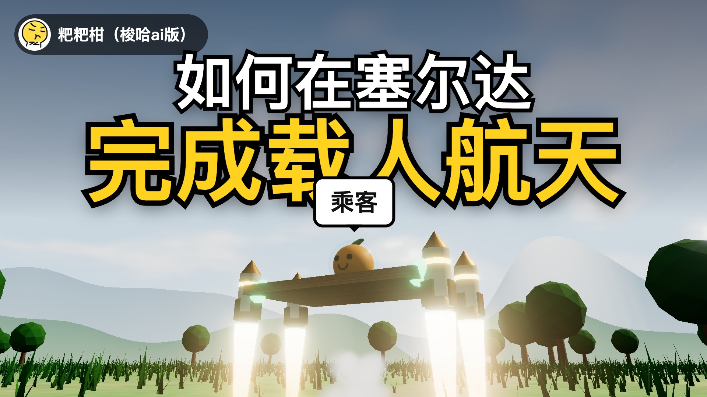

点击画面开始
WASD 走 · 鼠标 看 · 左键 抓起 / 松手（靠近别的零件会自动粘上）
滚轮 推远拉近 · QE 左右转 45° · RF 前后翻 45°
X 摇一摇拆下 · 右键 松手不粘 · V 开 / 关动力 · 1–0 召唤零件 · Esc 放开鼠标

封面制作中
机制拆解 · 第 5 期 · 究极手 · 代码由 Claude Opus 编写完整解析视频「机制拆解 05 · 究极手」发布在 B站 / 抖音，搜索作者 粑粑柑（梭哈ai版） 即可观看。视频里的演示画面，就是本页同一套物理和渲染逐帧渲染出来的。